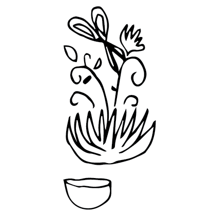

CHECK CARE INSTRUCTIONS FOR YOUR BIO REGION. NOTES HERE ARE FOR THE PACIFIC NORTH WEST.
Annual:
Start seeds indoors in March or direct sow after last frost.
Perrenial:
Wood chip base in spring,
trim back flowering stalk at year end. Leave leaf base.
Both plants:
do not over fertilize — more blooms in poor soil.
General practice: Harvest blooms often to promote more blooming.
Pick 40-50% of flowers but leave others as bee forage.

Harvest
June:
Flowers begin to bloom and can be harvested for natural dyes.
July, August, September, October:
Flowers can be harvested until October when plant can be harvested for dyes.
Uses
The flowers and leaves can be used to create a yellow/gold/orange or red dye.